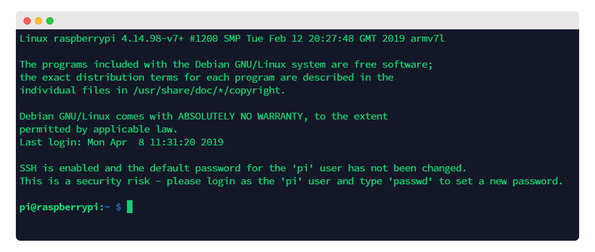
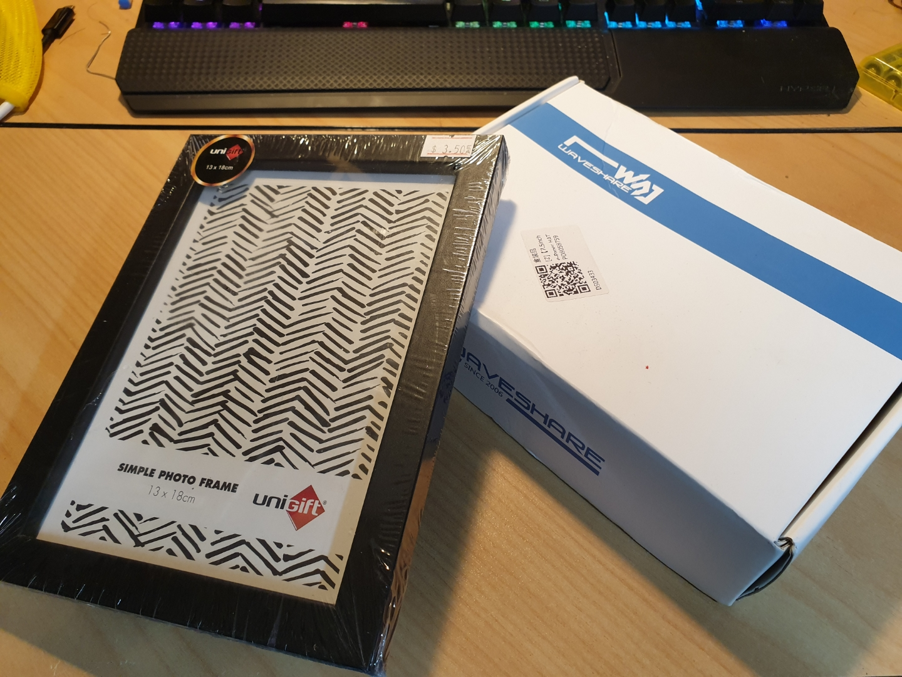
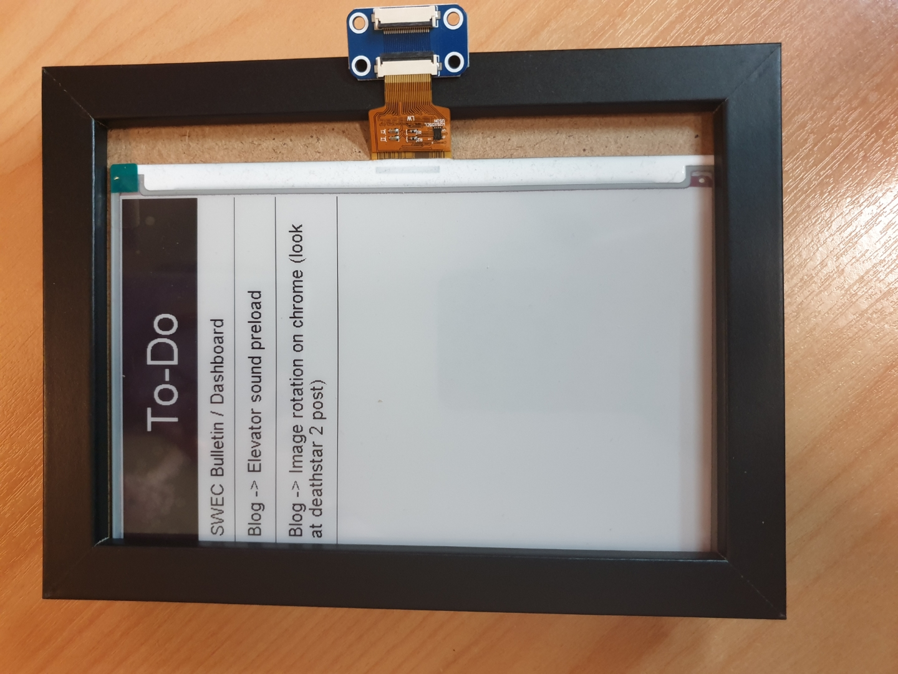
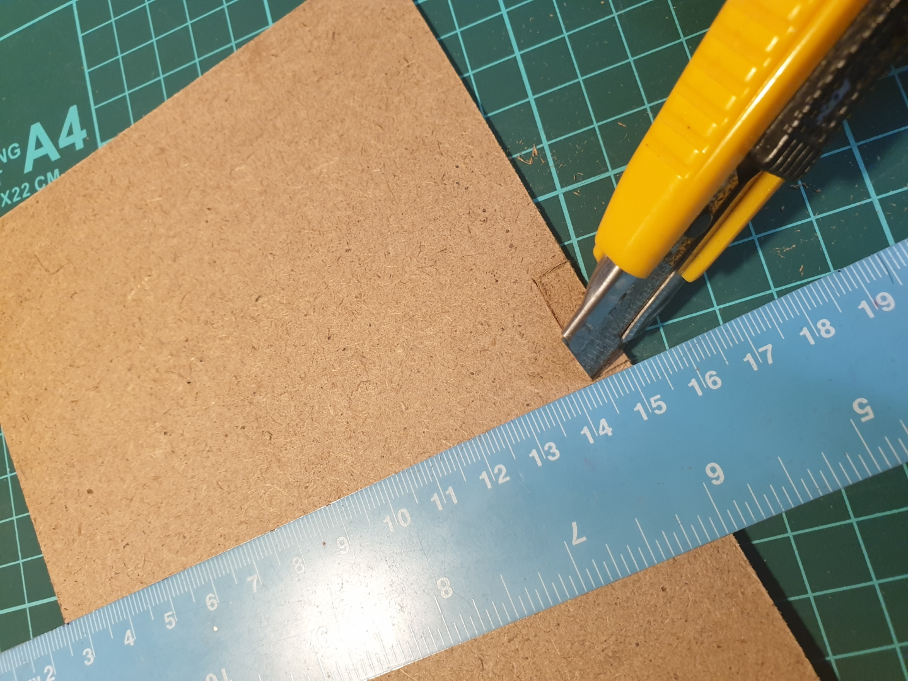
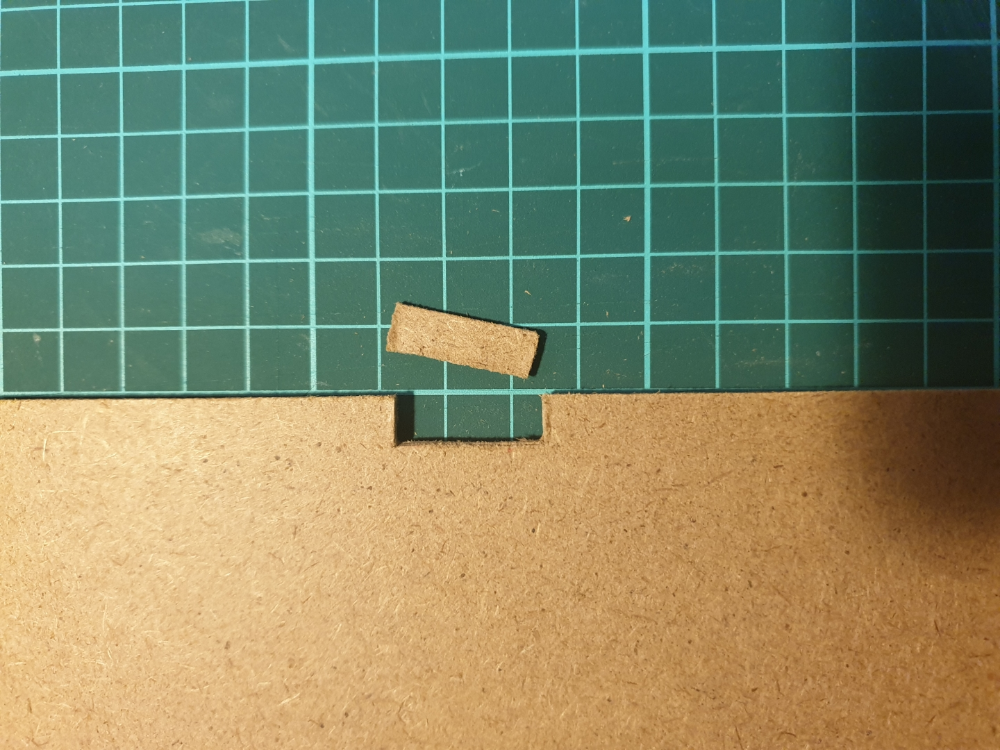
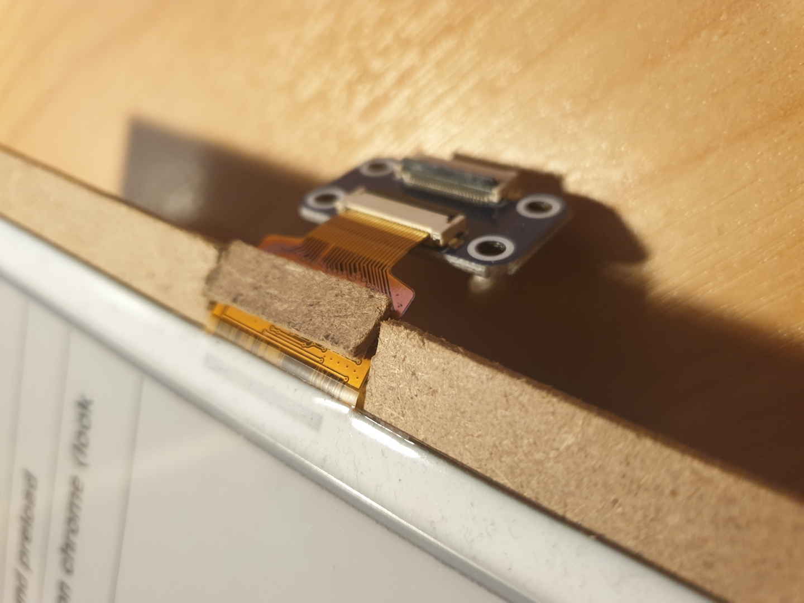
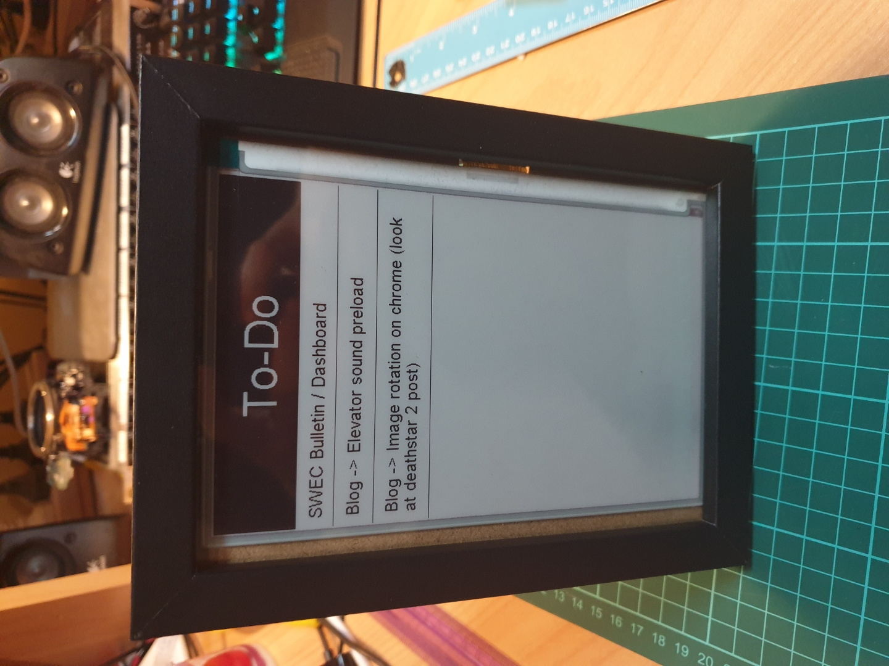

So back in June 2019 I bought a 7.5 inch “e-paper” display, with the intent of using it as an “Upcoming events” board.. or a TODO List.
Given the lack of time during then, to curb my initial curiousity I modified some starter code to make the display show me the current time and date.
Fast-forward to today, exams are over and time wasting is ready to begin!
But small problem, the display stopped working… So I had to go purchase another one.
EDIT: It was my Pi, I tried another Pi and everything was working!
I bought the Waveshare 7.5 inch Model B e-Paper screen from eBay for about AUD$90.
The screen comes with a driver board that communicates over SPI - something my Raspberry Pi 3B is able to do!
Raspberry Pi Setup
The first thing to do is to install an operating system that the Pi will run off.
In my case, I’ll be installing Raspbian (08/04/2019 DD/MM/YYYY).
As per the usual headless Raspberry Pi installations go… after flashing Raspbian onto a microSD card, enable SSH by creating a blank file called ssh in the boot partition of the card.
Then insert the microSD card into the Pi and power it up!
After a while, we’ll be able to SSH into the Pi with the default credentials pi:raspberry.
If you don’t know the IP, you can try your luck and SSH into it with the hostname raspberrypi.

Next is to enable SPI.
SPI is the communication protocol used to communicate between the Pi and the screen(’s driver board).
With raspi-config we can go down to Interfacing Settings, and find the option that will enable SPI.
Package Installation
Then to do some package updates
sudo apt update -y
sudo apt install python3-pip python3-pil python3-spidev git screen -y
sudo pip3 install RPi.GPIO
Installing screen is up to you, but I tend to use it alot to background my tasks.
EDIT: So I initially installed Raspbian Buster Lite (26/09/2019 DD/MM/YYYY) and it didn’t have PIL, spidev or pip installed, but the version of Raspbian Stretch I’m using does - So only screen had to be installed
e-Paper Software
git clone https://github.com/waveshare/e-Paper
cd e-Paper
Waveshare was kind enough to release some sample Python and C code alongside with their library (also in Python and C).
The sample code does draws some shapes and text in both the horizontal and vertical orientation, as well as with image files - enough to know how to use the library.
That said, time to make something with it!
Development
I decided to opt with the “TODO List” idea.
Having been using Trello to manage my TODO stuff, I thought that it would be great to use the e-Paper to show a specific Trello list. #TrelloDB
Using py-trello and the Waveshare EPD library, I wacked together some code that will periodically fetch the cards on a Trello list and display as many as it can on the screen.
Look at the code above if you wanna see it for yourself!
Casing
With the code finished, I wanted to buy an enclosure/case for the screen so that a) it wouldn’t get damaged, and b) so it would look nice.
My local dollar store had a 7x5” (18x13cm) photo frame for $3.50 which would be perfect to fit the screen, which was around 17x11cm.

First was a dry fit, to see where I would have to cut the MDF backboard to allow the cable to pass through.

After marking where to cut, out came the pocket knife!
|  |  |
Sweet, now we can wrap the screen’s ribbon cable behind the board!
I cut the MDF nicely enough that the offcut could be put back if I wanted.

Finally, fit everything together and we’re done!

Conclusion
I haven’t thought about how to mount the Pi yet, as it’s a bit big and bulky…
If I were to permanently dedicate the e-Paper screen to this project, I might invest in a Pi Zero so that I can decrease the size footprint.
Also since the screen is smaller than the photo frame, I might decorate the edges with some black tape, or maybe some Washi tape.
Also the acrylic that came with the frame needs a good wipe.
And the plastic protective film over the e-Paper screen is yet to be peeled off too :P
Otherwise, apart from freaking out just a few days ago if I had broken my $90 e-Paper screen, it was a fun project to do!